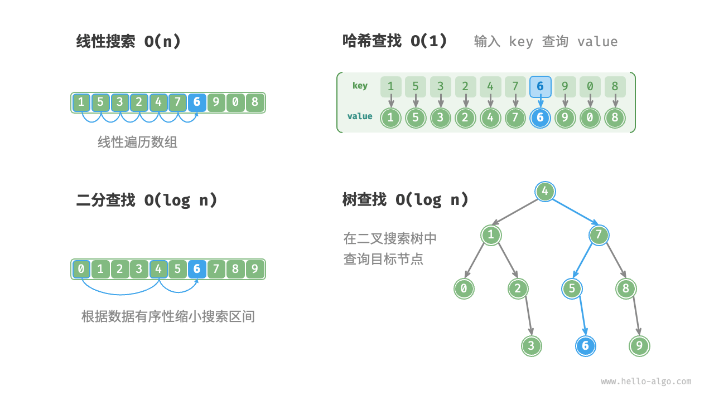

重识搜索算法
「搜索算法 searching algorithm」用于在数据结构（例如数组、链表、树或图）中搜索一个或一组满足特定条件的元素。
搜索算法可根据实现思路分为以下两类。
- 通过遍历数据结构来定位目标元素，例如数组、链表、树和图的遍历等。
- 利用数据组织结构或数据包含的先验信息，实现高效元素查找，例如二分查找、哈希查找和二叉搜索树查找等。
不难发现，这些知识点都已在前面的章节中介绍过，因此搜索算法对于我们来说并不陌生。在本节中，我们将从更加系统的视角切入，重新审视搜索算法。
暴力搜索
暴力搜索通过遍历数据结构的每个元素来定位目标元素。
- “线性搜索”适用于数组和链表等线性数据结构。它从数据结构的一端开始，逐个访问元素，直到找到目标元素或到达另一端仍没有找到目标元素为止。
- “广度优先搜索”和“深度优先搜索”是图和树的两种遍历策略。广度优先搜索从初始节点开始逐层搜索，由近及远地访问各个节点。深度优先搜索从初始节点开始，沿着一条路径走到头，再回溯并尝试其他路径，直到遍历完整个数据结构。
暴力搜索的优点是简单且通用性好，无须对数据做预处理和借助额外的数据结构。
然而，此类算法的时间复杂度为 $O(n)$ ，其中 $n$ 为元素数量，因此在数据量较大的情况下性能较差。
自适应搜索
自适应搜索利用数据的特有属性（例如有序性）来优化搜索过程，从而更高效地定位目标元素。
- “二分查找”利用数据的有序性实现高效查找，仅适用于数组。
- “哈希查找”利用哈希表将搜索数据和目标数据建立为键值对映射，从而实现查询操作。
- “树查找”在特定的树结构（例如二叉搜索树）中，基于比较节点值来快速排除节点，从而定位目标元素。
此类算法的优点是效率高，时间复杂度可达到 $O(\log n)$ 甚至 $O(1)$ 。
然而，使用这些算法往往需要对数据进行预处理。例如，二分查找需要预先对数组进行排序，哈希查找和树查找都需要借助额外的数据结构，维护这些数据结构也需要额外的时间和空间开销。
!!! tip
自适应搜索算法常被称为查找算法，**主要用于在特定数据结构中快速检索目标元素**。
搜索方法选取
给定大小为 $n$ 的一组数据，我们可以使用线性搜索、二分查找、树查找、哈希查找等多种方法从中搜索目标元素。各个方法的工作原理如下图所示。

上述几种方法的操作效率与特性如下表所示。
表
| 线性搜索 | 二分查找 | 树查找 | 哈希查找 | |
|---|---|---|---|---|
| 查找元素 | $O(n)$ | $O(\log n)$ | $O(\log n)$ | $O(1)$ |
| 插入元素 | $O(1)$ | $O(n)$ | $O(\log n)$ | $O(1)$ |
| 删除元素 | $O(n)$ | $O(n)$ | $O(\log n)$ | $O(1)$ |
| 额外空间 | $O(1)$ | $O(1)$ | $O(n)$ | $O(n)$ |
| 数据预处理 | / | 排序 $O(n \log n)$ | 建树 $O(n \log n)$ | 建哈希表 $O(n)$ |
| 数据是否有序 | 无序 | 有序 | 有序 | 无序 |
搜索算法的选择还取决于数据体量、搜索性能要求、数据查询与更新频率等。
线性搜索
- 通用性较好，无须任何数据预处理操作。假如我们仅需查询一次数据，那么其他三种方法的数据预处理的时间比线性搜索的时间还要更长。
- 适用于体量较小的数据，此情况下时间复杂度对效率影响较小。
- 适用于数据更新频率较高的场景，因为该方法不需要对数据进行任何额外维护。
二分查找
- 适用于大数据量的情况，效率表现稳定，最差时间复杂度为 $O(\log n)$ 。
- 数据量不能过大，因为存储数组需要连续的内存空间。
- 不适用于高频增删数据的场景，因为维护有序数组的开销较大。
哈希查找
- 适合对查询性能要求很高的场景，平均时间复杂度为 $O(1)$ 。
- 不适合需要有序数据或范围查找的场景，因为哈希表无法维护数据的有序性。
- 对哈希函数和哈希冲突处理策略的依赖性较高，具有较大的性能劣化风险。
- 不适合数据量过大的情况，因为哈希表需要额外空间来最大程度地减少冲突，从而提供良好的查询性能。
树查找
- 适用于海量数据，因为树节点在内存中是分散存储的。
- 适合需要维护有序数据或范围查找的场景。
- 在持续增删节点的过程中，二叉搜索树可能产生倾斜，时间复杂度劣化至 $O(n)$ 。
- 若使用 AVL 树或红黑树，则各项操作可在 $O(\log n)$ 效率下稳定运行，但维护树平衡的操作会增加额外的开销。